Given sufficient resolution, which method do we choose?
reversed 2D vortex, 32²–512², T ∈ {2, 8} · shape / volume / gradient errors · wall-clock cost · N=64 translating capillary balance
Tomislav Marić · Mathis Fricke · Dieter Bothe
MMA, TU Darmstadt
unified solver leiaLevelSetFoam — every method one dictionary
| reproduce: config/benchVortex*.yaml and
config/transISTN64ForceFluxModelMatrix.yaml and
config/transISTN64CurvatureDeliveryReplay.yaml
Part 1 of 8
Same case, same error norms, same reporting cadence (write times only) in every line — the wall clock is comparable by construction.
Part 2 of 8
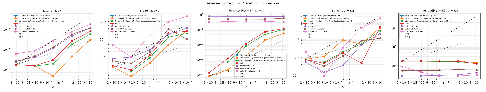
Five panels: shape / volume / band-gradient at t = T; volume + band-gradient at t = T/2 (maximal stretching — the volume fraction of that shape is unknown, so no shape reference there). The next five slides take each panel one at a time.
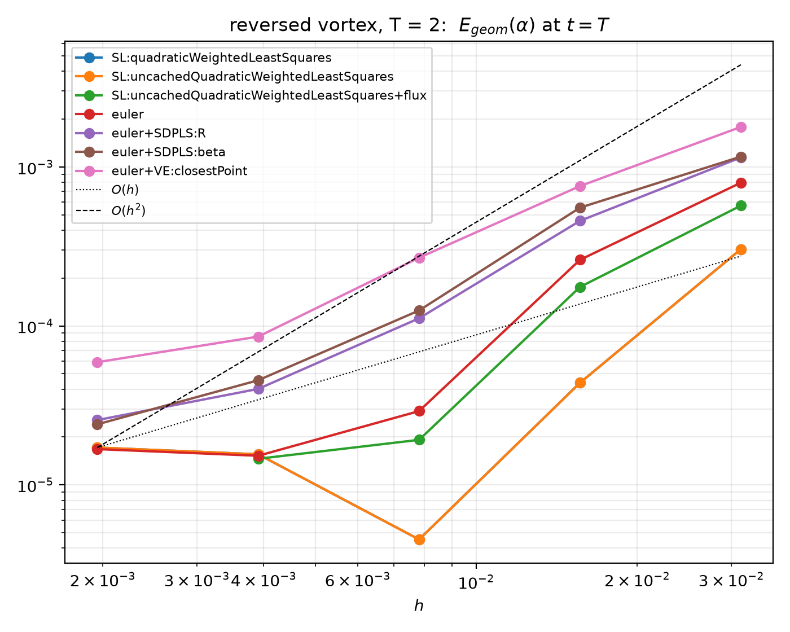
The headline accuracy: SL and plain Euler converge at ~2nd order and coincide; the SDPLS sources and velocity extension trail by a constant factor. Everything is well-resolved here, so all lines converge cleanly.
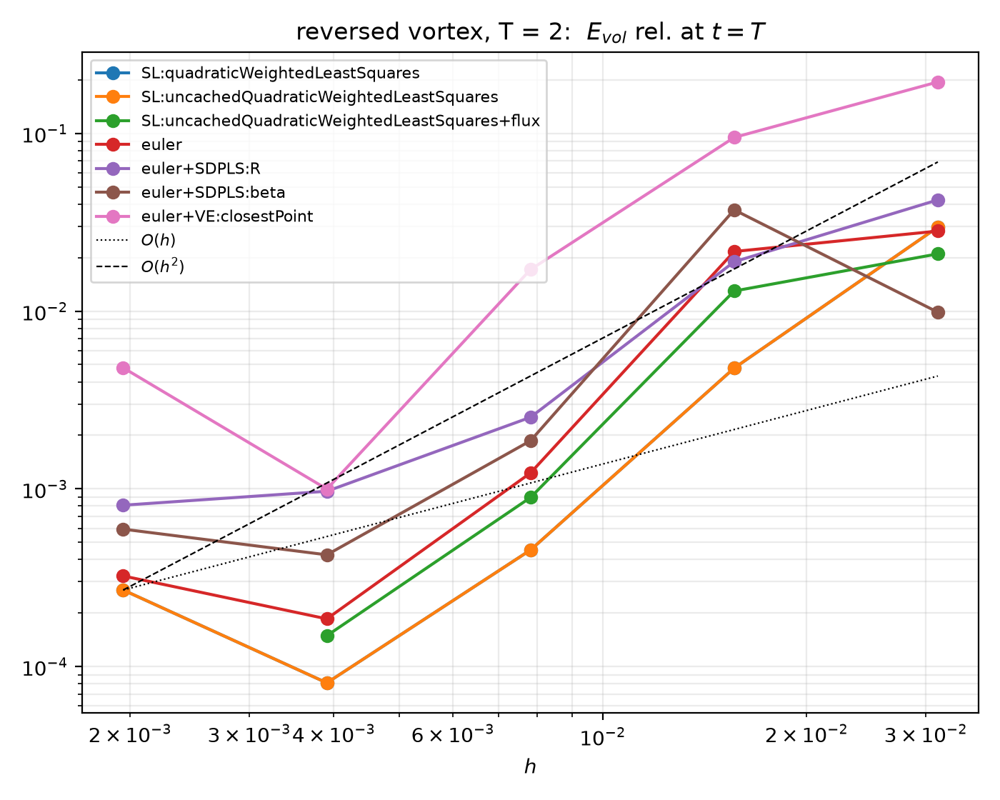
Reversed-state volume error. SL and Euler are best; the source terms add a small mass-exchange penalty at the end state (the price for the T/2 volume advantage two slides on).
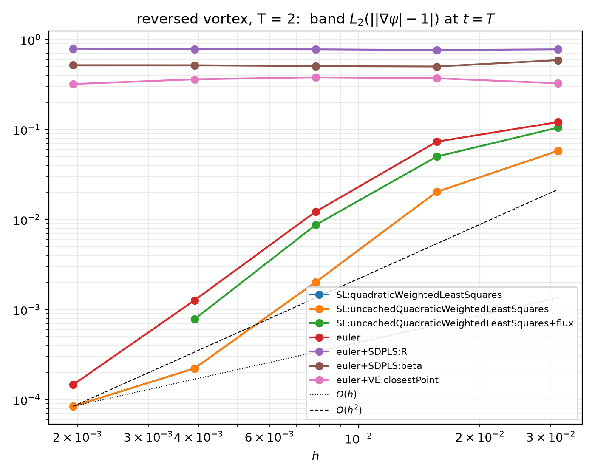
The one panel where the methods SEPARATE by design: SL keeps \(|\nabla\psi|\approx1\) (the reconstruction is signed-distance-aware); the SDPLS sources force a large band gradient deviation (they trade signed distance for the conservation shown next); plain Euler sits between.
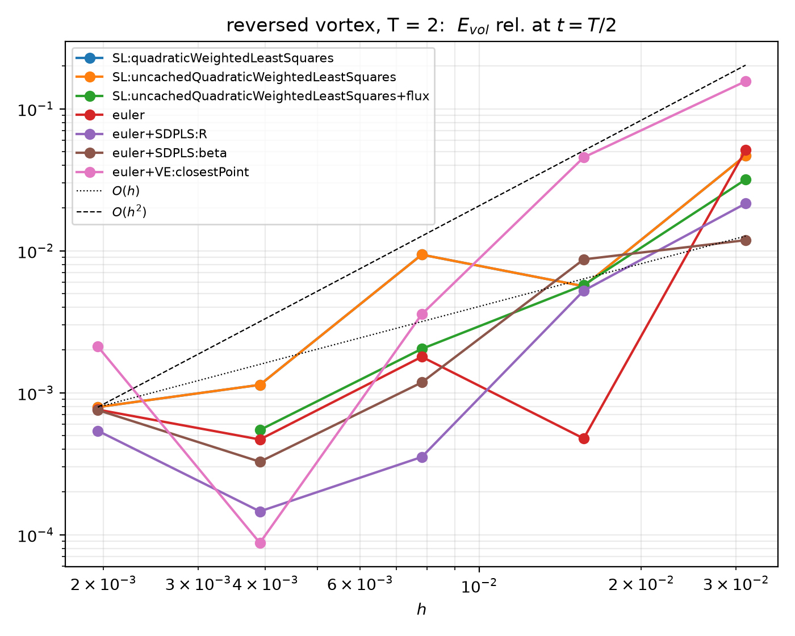
The SDPLS home turf: at the most-deformed instant the R/beta sources give the best volume conservation of any method — the zero-interface-displacement property paying off exactly where it should. (At 512² SL closes this gap.)
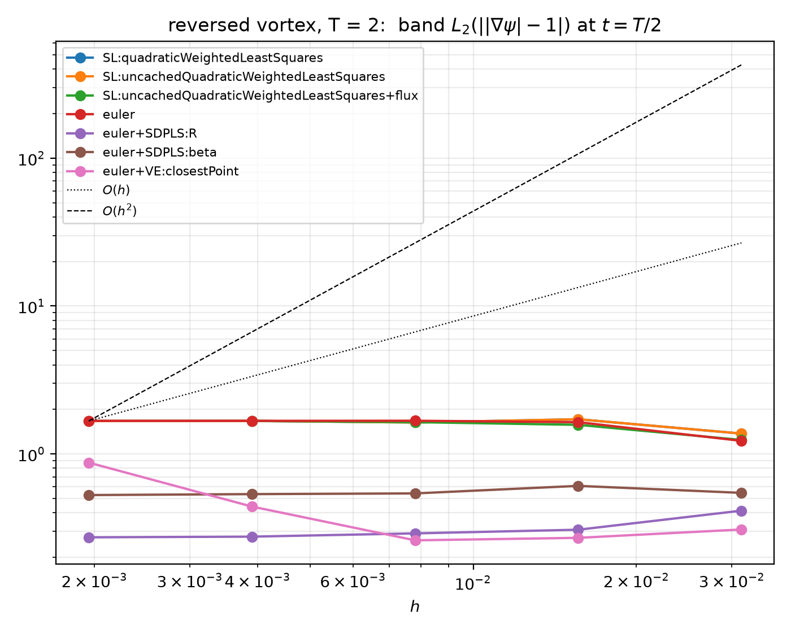
Same separation as the t = T gradient panel but under maximal strain: SL stays closest to a signed distance; the sources deviate most (by construction, they control the gradient's evolution, not its band value).
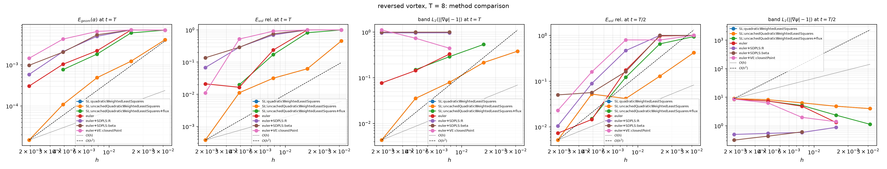
At N ≤ 128 the wound filament is below the mesh resolution for
every method; 256²/512² restore the T = 2 ranking (SL first). Per-panel
T=8 figures are in data/figures/benchVortex_T8_*.png.
Part 3 of 8
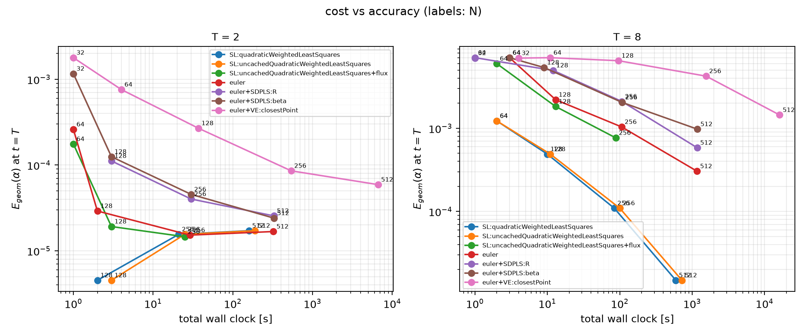
Total wall clock (ELAPSED_CLOCK_TIME) vs shape error at t = T; point labels: N. Down-left is better.
Part 4 of 8
| method | T=2: E_geom / E_vol / clock | T=8: E_geom / E_vol / clock |
|---|---|---|
| SL quadratic (cached) | 1.7e-5 / 2.7e-4 / 160 s | 1.5e-5 / 3.8e-4 / 595 s |
| SL quadratic (uncached) | 1.7e-5 / 2.7e-4 / 190 s | 1.5e-5 / 3.8e-4 / 722 s |
| SL quadratic flux-form (N=256²) | 1.5e-5 / 1.5e-4 / 25 s | 7.7e-4 / 2.0e-2 / 88 s |
| euler (defect-corrected) | 1.7e-5 / 3.2e-4 / 323 s | 3.0e-4 / 2.1e-2 / 1170 s |
| euler + SDPLS:R | 2.6e-5 / 8.1e-4 / 327 s | 5.8e-4 / 6.8e-2 / 1170 s |
| euler + SDPLS:beta | 2.4e-5 / 5.9e-4 / 329 s | 9.8e-4 / 1.4e-1 / 1180 s |
| euler + VE:closestPoint | 5.9e-5 / 4.8e-3 / 6630 s | 1.4e-3 / 1.1e-2 / 16100 s |
SL at T = 8 / 512² matches its own T = 2 accuracy: with the filament resolved, the long horizon costs SL nothing. The SDPLS T/2-volume advantage seen at N ≤ 128 is a coarse-mesh effect — at 512² SL wins that column too (5.2e-3 vs 1.1e-2).
Flux-form (conservative scheme, ran to 256²) is COMPETITIVE at
T = 2 — same convergence order as point-value, errors within ~2×, and it
conserves ∫ψ to machine precision (at 256² its shape error edges point-value,
which stalled 128→256). Its extra numerical diffusion (half-step swept flux) only
costs at the T = 8 sub-cell filament (vs point-value at the same N=256²: 1.1e-4 /
1.1e-2 / 79 s). Full table incl. T/2 + band gradients:
data/tables/benchVortex_decision.tex (regenerated per harvest).
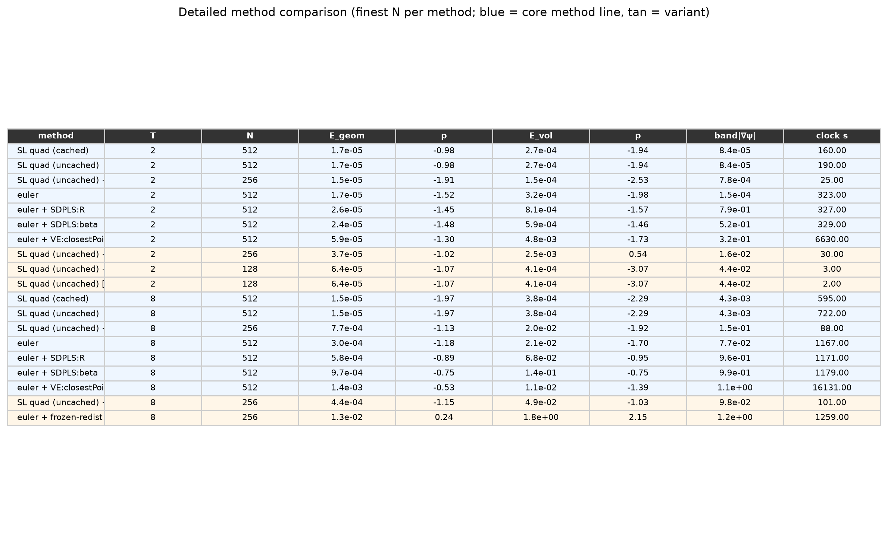
Finest N per method (variants ran to 256², core lines to 512²). \(p_{geom}\), \(p_{vol}\) = least-squares convergence orders over the swept N. Blue = core method line, tan = tuning knob / redistancing variant. SL point-value leads on accuracy at both horizons; flux-form matches it at T = 2 and trails only at T = 8; the Eulerian lines are ~2nd order; VE is dominated on cost.
Part 5 of 8
SL quadratic — α
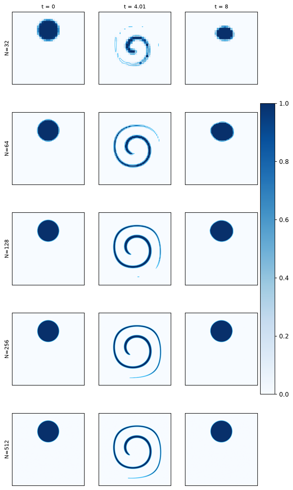
euler — α
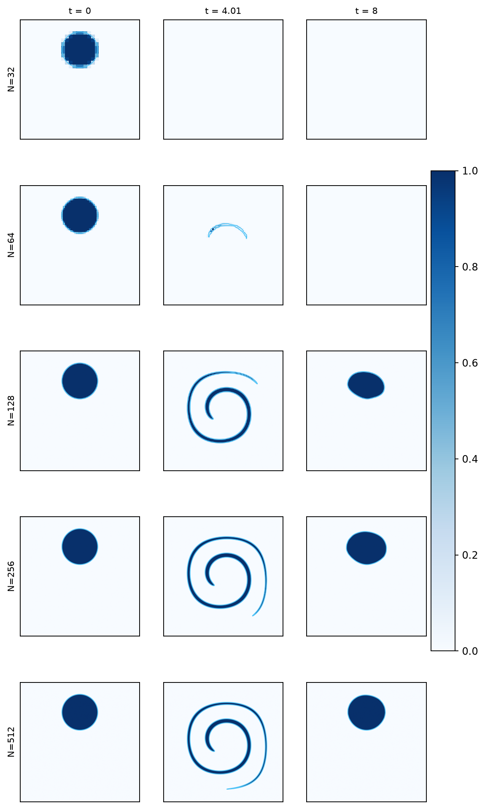
rows: N; cols: t ∈ {0, T/2, T}; cyan: zero level set.
SL quadratic — ||∇ψ|−1|
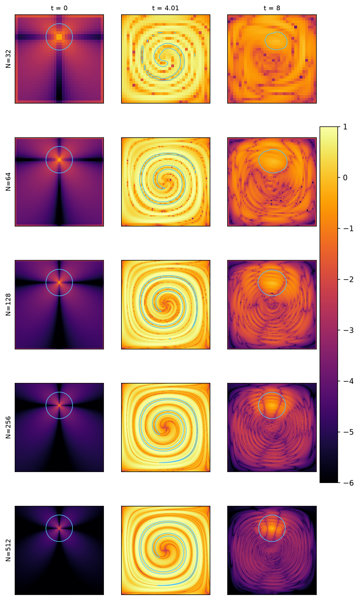
euler+SDPLS:R — ||∇ψ|−1|
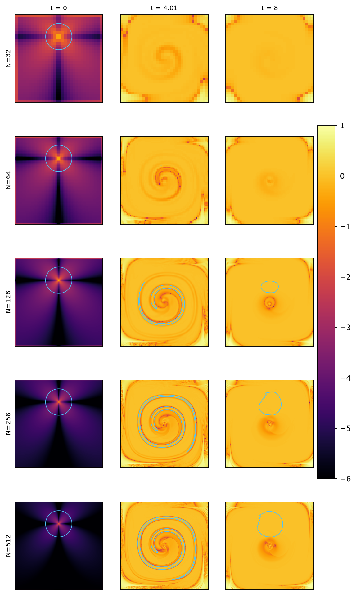
Full atlas (every method × {α, ψ, ||∇ψ|−1|}
× T ∈ {2, 8}): data/figures/bench_*_*.png.
Part 6 of 8
every fault code-documented or benchmark-measured; every improvement concrete. Several are already implemented (this deck's SL rows).
Faults
Improvements
The three implemented items are measured on the next "SL improvements" slide.
Faults
Improvements
Faults
Improvements
Faults
Improvements
Redistancing (retired)
Phase indicator (LLS plane)
Pitfall found on the way: leiaPerturbMesh was a NO-OP on
2D meshes (every point lies on the empty patches, and the boundary reset reverted the
whole perturbation) — fixed (pin physical patches only, zero the empty-direction
component, deterministic seed). The perturbed study is the first to actually run on a
perturbed mesh. Reproduce: benchVortexSLimproved / ...Perturbed / ...flux.
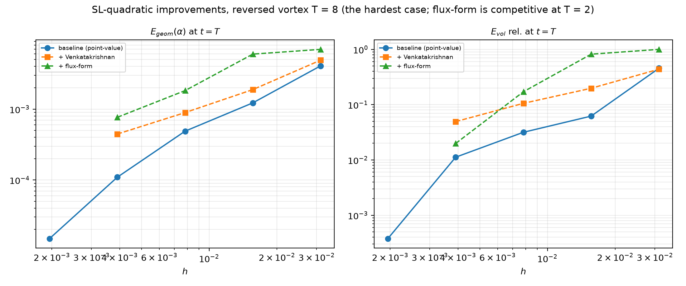
T = 8 (the hardest case for flux-form). Left: the Venkatakrishnan limiter softens the shape-error slope (order ~0.9, above BJ's 0.1 stall) but trails the unlimited baseline; flux-form trails on shape here. Right: flux-form's extra numerical diffusion shows on the T=8 sub-cell filament. At T = 2 (resolved) flux-form instead tracks point-value within ~2× at the same order — see the decision table.
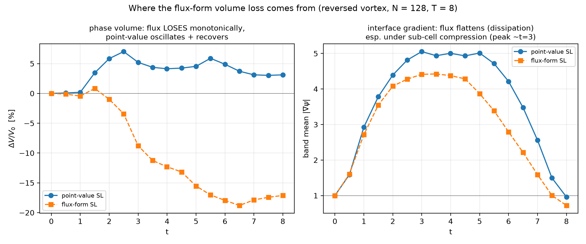
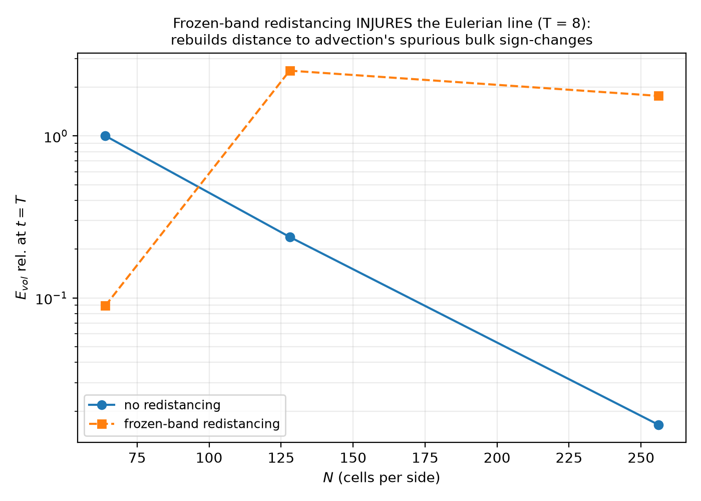
Eulerian line, T = 8. The redistancer engineered for zero interface displacement (static gate: Egeom = Evol = 0) still inflates the volume error 10–100× in transport — it rebuilds distance to linearUpwind's spurious BULK sign-changes, which the indicator reads as phase. Redistancing can't fix what transport corrupted. The GRL line is closed; SDPLS stays the only viable ψ-maintenance.
Part 7 of 8
model →
\(G_{\sigma,f}=\int_{S_f}\mathbf f_\sigma\!\cdot\mathbf n_f\,dS\)
[N/m]
→ pressure flux → fvc::reconstruct
\(\phi_g=r_{AU,f}\,[G_{\sigma,f}-g h_f\,\mathrm{snGrad}(\rho)|S_f|]\)
\(\mathbf U=\mathbf H/A+r_{AU}\,\mathrm{reconstruct}[(\phi_g-\phi_p)/r_{AU,f}]\)
The same evaluated \(G_{\sigma,f}\) is reused in the momentum predictor and pressure corrector. A production model can no longer enter through a discretely inequivalent cell source.
| model | outcome | max \(|U-U_{trans}|\) | final \(|U-U_{trans}|\) |
|---|---|---|---|
| constant curvature 1/R | t=0.05 | 2.17e-7 | 4.89e-8 |
| div(grad ψ/|grad ψ|) | t=0.05 | 9.06e-2 | 6.56e-2 |
| trace(grad nψ) | t=0.05 | 9.06e-2 | 6.56e-2 |
| trace(grad ngeo) | t=0.05 | 9.06e-2 | 6.56e-2 |
| Kang interface interpolation | t=0.05 | 1.67e-1 | 1.63e-1 |
Survival is not equilibrium: the best computed-curvature survivor peaks at 0.0906 m/s, larger than the imposed 0.05 m/s translation.
N=64, Utrans=(0.05,0,0) m/s, quadratic SL, rhoLENT, central geometric face density, capillary max Δt=2.12129e-5 s. Metric is the maximum cell-centred velocity disturbance over the complete trajectory.
| model | last valid t [s] | max \(|U-U_{trans}|\) [m/s] |
|---|---|---|
| reconstructed curvature | 3.776e-3 | 6.905 |
| alpha-smoothed CSF curvature | 9.546e-4 | 1.075 |
| structured integral surface tension | 9.334e-4 | 4.631 |
| integral conormal → face flux | 9.546e-4 | 3.538 |
| iso-conormal CSF curvature | 1.421e-3 | 0.903 |
Conclusion: the face-flux contract removes a coupling ambiguity, but it does not repair curvature/noise or force localisation. The exact control proves the pressure–velocity path can preserve translating equilibrium; the next research gate must improve the computed capillary flux itself.
data/tables/transISTN64ForceFluxModelMatrix.csv ·
failed cases report the maximum over every finite CSV row before FPE.
| one-step replay | t=0 | t≈0.01 | t≈0.025 | t≈0.05 |
|---|---|---|---|---|
| exact constant | 7.60e-9 | 5.07e-9 | 9.50e-9 | 7.37e-9 |
| computed interface mean | 7.66e-9 | 5.11e-9 | 9.60e-9 | 3.84e-9 |
| quadratic cell centre | 7.11e-3 | 8.47e-3 | 1.08e-1 | 2.03 |
| closest-point quadratic | 7.07e-3 | 8.43e-3 | 1.14e-1 | 1.25 |
| foot-point height function | 1.49e-4 | 2.98e-3 | 1.18e-1 | 1.87e-1 |
| quadratic + Kang face value | 1.19e-3 | 2.06e-3 | 1.01e-1 | 1.08 |
| FVM + Kang | 1.91e-3 | 2.89e-3 | 1.64e-2 | 2.50e-2 |
Mechanism isolated: the computed mean curvature itself can change while PIMPLE remains balanced; it is the spatial variation of κ on the CSF support that leaves a velocity-producing component. The foot-point fit is excellent on the clean interface, but its advantage disappears as the transported ψ profile deteriorates.
Quiet exact-curvature, uncached-quadratic-SL snapshots; U reset to
Utrans; interface frozen; one complete PIMPLE timestep. Entries are maximum
cell-centred ∣U−Utrans∣ [m/s]. Decision data:
transISTN64CurvatureDeliveryReplay.csv.
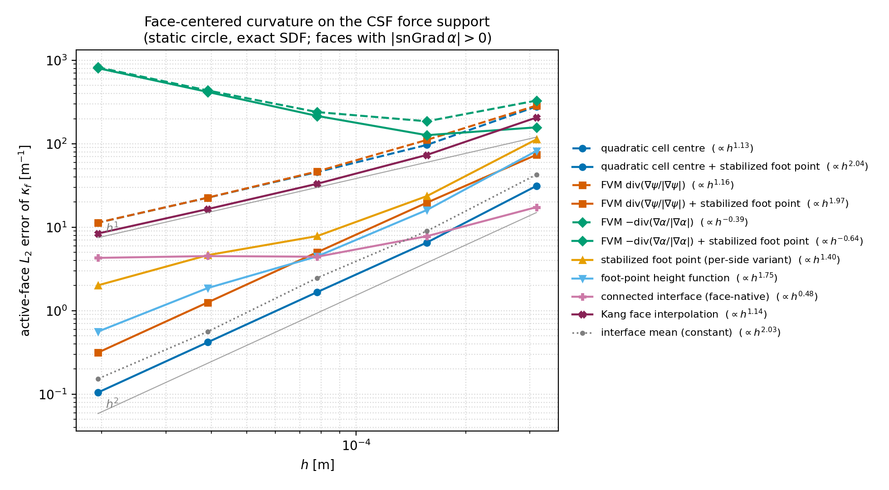
footPointDistance) restores clean 2nd order:
\(L_2 = 0.10\) vs \(11.4\;\mathrm{m}^{-1}\) at \(N{=}512\) — 100×.
Order matters: the per-side variant (correct each cell, then combine)
reaches only \(h^{1.4}\) — the inverse must act on the
face-combined value.Static circle R = 1 mm in the 0.01 m box, exact SDF (leiaSetFields),
N = 32–512, |Sf|-weighted L2 over active faces.
Pitfall found on the way: the plane-LSQ degeneracy guard compared an
absolute-coordinate determinant against a fixed threshold and silently zeroed EVERY
band-cell plane at N = 512 (killing the plane-based indicators and curvature models
at fine h) — fixed with a centered, scale-free test.
config/faceCurvatureDroplet2D.yaml ·
data/tables/face_curvature_orders.csv.
signChange is two cells thick; it is not the set of cut cells.The clean circle could have a good local fit in every cell while still having no single ordering, no shared nodes and no tangential smoothness constraint.
Transport-profile noise changed the local feet independently; the resulting \(\kappa_f\) variation was not a discrete pressure gradient.
Design change: define the zero surface globally first; only then fit and deliver curvature.
Current implementation is serial and pseudo-2D. Multiple physical components, processor boundaries and connected 3-D surface patches are later work.
\(\tau_j=t_i\cdot(x_j-x_i)/h_i,\quad \zeta_j=\bar n_i\cdot(x_j-x_i)/h_i\)
Fit \(\zeta(\tau)=\tfrac12 A_i\tau^2+B_i\tau+C_i\) by least squares.
\[\kappa_i^{raw}=-\frac{A_i/h_i}{(1+B_i^2)^{3/2}}\]
Sign convention: \(\nabla\psi\) points outward, so a circular drop has \(+1/R\).
Unlike the foot-point model, every stencil follows the same ordered chain. Half-widths \(w=3,4,5\) were replayed.
\[(I+\lambda L_s)\kappa=\kappa^{raw}\]
Jacobi iteration; tested \((w,\lambda)=(3,1),(4,4),(5,16)\).
\[\kappa\leftarrow\kappa-\theta L_s^2\kappa,\qquad\theta\le1/16\]
Higher selectivity for grid modes; tested 20 and 50 passes with \(w=3,\theta=0.05\).
Closed-curve constraint: after filtering, add one constant so \(\sum_i\kappa_i\,\ell_i=\pm2\pi\). This fixes the global curvature null mode without deleting spatially varying physical modes.
kappaInterfaceFacereconstructedCurvature looks up the surface
field directly. The cell field kappa is filled only for diagnostics;
no cell curvature is interpolated back to the force faces.
The first implementation reported \(|U-U_{trans}|\approx2\times10^{-17}\) m/s—apparently better than the exact-curvature control.
It was false: all reconstructed elements had been
rejected, kappaInterfaceFace was zero, and no capillary force was
applied.
Decision metric remains only maximum cell-centred \(|U-U_{trans}|\). Topology is a validity condition, not a substitute force-error norm.
| candidate | t=0 | t≈0.01 | t≈0.025 | t≈0.05 |
|---|---|---|---|---|
| Helmholtz \(w=3,\lambda=1\) | 1.67e-3 | 1.66e-3 | 1.79e-2 | 5.01e-2 |
| Helmholtz \(w=4,\lambda=4\) | 9.98e-4 | 7.05e-4 | 7.88e-3 | 1.60e-2 |
| Helmholtz \(w=5,\lambda=16\) | 6.01e-4 | 4.38e-4 | 1.79e-3 | 4.55e-3 |
| biharmonic \(w=3,\theta=.05,\;20\times\) | 1.74e-3 | 9.44e-4 | 1.62e-2 | 5.21e-2 |
| biharmonic \(w=3,\theta=.05,\;50\times\) | 1.31e-3 | 1.18e-3 | 8.47e-3 | 3.50e-2 |
| FVM + Kang reference | 1.91e-3 | 2.89e-3 | 1.64e-2 | 2.50e-2 |
At the hardest snapshot the selected candidate is 5.5× quieter than FVM–Kang, 41× quieter than the independent foot-point fit, and 447× quieter than cell-centred quadratic curvature.
Every connected row: 52 elements · one component ·
zero open ends · 52/52 fits · zero fallbacks. Entries are maximum
cell-centred |U−Utrans| [m/s] ·
transISTN64CurvatureDeliveryReplay.csv.
For \(N_\Gamma=52,w=5,\lambda=16\), the transported circle has element curvature only about \([978,1034]\) m−1 at \(t\approx0.05\).
For the oscillating-drop mode \(m=2\), the filter alone gives \(H_2\approx0.52\). The wide local fit attenuates it further.
Therefore: replay quietness is necessary but not sufficient. The selected candidate is not yet an oscillating-droplet model.
| model family | what changes | what remains distinct |
|---|---|---|
| reconstructedCurvature | faceCurvatureSource registered consumes
kappaInterfaceFace directly. |
Geometric \(\alpha\) localises the force. |
| divGradPsi / traceGrad / traceGradGeo | The registered path now bypasses cell differentiation and interpolation. | The native estimator remains available with
faceCurvatureSource model. |
| quadratic or FVM + Kang | Kang explicitly bypasses owner/neighbour interpolation when the face-native service is selected. | Sharp-Heaviside versus geometric-\(\alpha\) force support remains testable. |
| alpha-smoothed / correction CSF | Consumes the same \(\kappa_f\) through the common assembly. | Retains snGrad(alphaS); density and \(r_{AU,f}\) errors
remain solver-side. |
| exact constant curvature | No production change. | Retains its role as the pressure-flux null-space oracle. |
The reusable object is \(\kappa_f^\Gamma\), not a new cell source. The base class assembles and validates integrated scalar \(G_{\sigma,f}\).
All rows use the same connected half-width-3, 20-pass biharmonic face curvature. The observable is one complete frozen-interface PIMPLE step: maximum cell-centred \(|U-U_{trans}|\) [m/s].
| consumer / localisation | t=0 | t~0.01 | t~0.025 | t~0.05 |
|---|---|---|---|---|
| reconstructed + geometric \(\alpha\) | 1.7449e-3 | 9.4418e-4 | 1.6189e-2 | 5.2088e-2 |
| div / both trace / Kang / iso + geometric \(\alpha\) | 1.7449e-3 | 9.4418e-4 | 1.6189e-2 | 5.2088e-2 |
| alpha-CSF + smoothed \(\alpha_S\) | 2.8929e-3 | 5.2182e-3 | 2.5169e-2 | 1.1393e-1 |
| exact constant oracle | 7.60e-9 | 5.07e-9 | 9.50e-9 | 7.37e-9 |
Meaning: once \(\kappa_f\) and localisation match, reconstructed, divergence, trace, Kang and iso-CSF are numerically the same force model. The remaining alpha-CSF difference is localisation, not curvature.
integralConormal is curvature-free; forcing it through
\(\kappa_f\nabla\alpha\) changes the model.Implication: connected geometry removes one major source of inconsistency across all models; it does not make every surface-tension discretisation balanced.
leiaTestConnectedCurvatureModes calls the same C++ function as
the coupled solver and exports its actual elements and curvatures.Detailed result: curvatureModeTransferGate.csv;
candidate verdicts: curvatureModeTransferGateSummary.csv.
| candidate | min transfer, N≥64 | max rel. L2 | late replay [m/s] | mode gate |
|---|---|---|---|---|
| h3 Helmholtz \(\lambda=1\) | 0.716 | 0.0689 | 0.04205 | fail |
| h5 Helmholtz \(\lambda=16\) | 0.156 | 0.1757 | 0.00469 | fail |
| h3 biharmonic, 20 | 0.838 | 0.0713 | 0.05209 | pass |
| h3 biharmonic, 50 | 0.772 | 0.0551 | 0.03503 | fail |
| h4 biharmonic, 10 | 0.797 | 0.0617 | 0.03935 | fail |
Conclusion: increasing one scalar smoothing strength suppresses the late replay defect only by erasing resolved \(m=4\) curvature. Parameter tuning alone cannot satisfy both gates.
The translating failure is retained as evidence; it was not promoted into an extra, undocumented gate on the requested oscillating run.
Rule: an oscillating level-set benchmark must begin from a metric distance field; matching only the zero contour is insufficient.
| observable | result | interpretation |
|---|---|---|
| requested / last complete time | 0.1 / 0.020895 s | SIGFPE in U solve |
| mode-2 amplitude | 0.0949 → max 0.5121 mm | nonphysical growth |
| maximum cell velocity | 15.46 m/s at 0.01589 s | catastrophic |
| maximum volume error | 4.965% | coupled transport failure |
| mode-2 period | 8.801 vs 9.508 ms | −7.44%, before runaway |
| final \(|\nabla\psi|\) band | 0.0858–7.087 | distance profile collapses |
The solver CSV now includes a least-squares polar
\(m=2\) decomposition. Publication files:
oscISTN64ConnectedModePreserving*.csv.
Provenance: clean repository-wide rebuild and replay with OpenFOAM v2512.
curvatureExtension.estimator analyticImplicitSurface evaluates
exact ellipse curvature at each reconstructed interface element.connectedFit + helmholtzPreserveModes on
the same mesh and initial signed-distance field.Executed at N=32,64,128 on identical uniform and deterministic 10%-perturbed mesh pairs. Perturbed pressure solves were rerun with the velocity-converged eight non-orthogonal correctors. No surface-force norm is used.
| N | uniform mesh [m/s] | 10%-perturbed mesh [m/s] | ||||||
|---|---|---|---|---|---|---|---|---|
| oracle |U|max | candidate |U|max | max difference | / oracle | oracle |U|max | candidate |U|max | max difference | / oracle | |
| 32 | 0.02895 | 0.04268 | 0.01374 | 47.5% | 2.364 | 3.341 | 2.230 | 94.3% |
| 64 | 0.03699 | 0.04008 | 0.004023 | 10.9% | 3.673 | 3.648 | 0.4643 | 12.6% |
| 128 | 0.008376 | 0.009743 | 0.001654 | 19.7% | 0.7119 | 0.9000 | 0.7118 | 100.0% |
Decision: candidate curvature is a secondary error on uniform grids. On perturbed grids, exact curvature itself produces 82–99 times the uniform-grid oracle velocity, so this candidate cannot advance.
Still numerical by design:
snGrad(alpha), density weighting, \(r_{AU,f}\), the pressure
Laplacian and the common fvc::reconstruct remain unchanged.
The three paths are candidate, exact curvature on numerical geometry, and exact curvature plus analytic geometry/localisation. Metric: cell-centred velocity only.
| N | uniform max |U| [m/s] | 10%-perturbed mesh [m/s] | |||
|---|---|---|---|---|---|
| exact \(\kappa\) | + analytic geometry | exact \(\kappa\) | + analytic geometry | direct field change | |
| 32 | 0.02895 | 0.03858 | 2.364 | 3.921 | 2.245 |
| 64 | 0.03699 | 0.02847 | 3.673 | 3.263 | 1.281 |
| 128 | 0.008376 | 0.006917 | 0.7119 | 1.129 | 0.5924 |
Decision: the analytic-geometry oracle remains 102–163 times larger on perturbed than uniform meshes. Removing vertex interpolation and LSQ normals is not the cure.
All 18 frozen one-step solves completed under OpenFOAM v2512; perturbed rows use eight non-orthogonal correctors. Every reconstruction retained one closed component and no fallback. No force norm is used.
| research stage | interface | mesh | pressure implication |
|---|---|---|---|
| stationary droplet | circle | uniform hex | no skew-mesh test |
| translating droplet | translated circle | uniform hex | no skew-mesh test |
| oscillating droplet | perturbed ellipse | uniform hex | “perturbed” meant shape |
| mode-transfer gate | perturbed circles | uniform + perturbed | curvature-only; no PIMPLE |
| velocity oracles | ellipse / exact circle | uniform + perturbed | first skew-mesh capillary gates |
Audit: the later perturbed CFD oracle rows initially inherited one non-orthogonal correction. They have now been rerun with the independently converged value of eight.
Decision logic: a quiet potential oracle with noisy CSF indicts localisation assembly; equal noisy paths indict the shared pressure/\(r_{AU,f}\)/reconstruction chain.
| N | uniform max |U| [m/s] | 10%-perturbed max |U| [m/s] | max field difference [m/s] | ||
|---|---|---|---|---|---|
| CSF product | pressure potential | CSF product | pressure potential | ||
| 32 | 3.770e-9 | 3.770e-9 | 8.584e-6 | 8.584e-6 | 2.02e-14 |
| 64 | 7.635e-9 | 7.635e-9 | 7.328e-4 | 7.328e-4 | 4.25e-14 |
| 128 | 1.039e-8 | 1.039e-8 | 1.392e-3 | 1.392e-3 | 1.50e-13 |
Result: for constant \(\kappa\), the two complete CFD solutions agree to roundoff. Localisation product assembly is exonerated; the perturbation-sensitive residual survives in the common pressure path.
Frozen exact circle; analytic Detrixhe–Aslam geometry;
rhoLENT-central; identical capillary step, PIMPLE, \(r_{AU,f}\) and
fvc::reconstruct. Perturbed rows use eight converged non-orthogonal
correctors. Decision observable: maximum written cell velocity only.
| N | 0 corrections | 1 | 2 | 4 | 8 | 16 |
|---|---|---|---|---|---|---|
| 32 | 1.358e-5 | 1.006e-5 | 8.536e-6 | 8.583e-6 | 8.584e-6 | 8.584e-6 |
| 64 | 1.370e-3 | 7.519e-4 | 7.378e-4 | 7.328e-4 | 7.328e-4 | 7.328e-4 |
| 128 | 1.183e-2 | 1.146e-3 | 1.341e-3 | 1.388e-3 | 1.392e-3 | 1.392e-3 |
Decision: one correction was under-converged; eight is sufficient and is now enforced. The converged residual remains orders of magnitude above the uniform-mesh value and grows with refinement.
Pressure-potential model, perturbed exact circle, unchanged pressure tolerances; N=32,64,128 also agree at 32 and 64 corrections. Metric: maximum written cell-centred |U| only.
| N | corrected pair | uncorrected pair | uncorrected / corrected |
|---|---|---|---|
| 32 | 8.584e-6 | 1.044e-6 | 0.122 |
| 64 | 7.328e-4 | 7.537e-4 | 1.029 |
| 128 | 1.392e-3 | 1.815e-3 | 1.304 |
Result: removing the non-orthogonal correction helps only at N=32. It is slightly worse at N=64 and 30% worse at N=128. The corrected face-normal operator is therefore not the sole cause.
Exact circle; pressure-potential force; physical \(r_{AU,f}\); eight PIMPLE non-orthogonal loops in both variants. Each force and pressure Laplacian uses the same corrected or uncorrected scheme. Observable: maximum written cell-centred |U| [m/s].
| N | corrected pair | uncorrected pair | ||
|---|---|---|---|---|
| physical \(r_{AU,f}\) | constant \(r_{AU,f}\) | physical \(r_{AU,f}\) | constant \(r_{AU,f}\) | |
| 32 | 8.584e-6 | 3.163e-6 | 1.044e-6 | 3.514e-7 |
| 64 | 7.328e-4 | 8.582e-4 | 7.537e-4 | 8.877e-4 |
| 128 | 1.392e-3 | 1.603e-3 | 1.815e-3 | 2.022e-3 |
Result: constant weighting helps only the coarse mesh. At N=64 and 128 it increases the residual by 15–18%, so face-varying \(r_{AU,f}\) is not the refinement-growing mechanism.
The diagnostic replaces only face \(r_{AU,f}\) by the
volume-weighted mean; cell \(r_{AU}\), PIMPLE and
fvc::reconstruct remain physical. Metric: max cell |U| [m/s].
| N | production GAMG 1e-9 / rel 0.01 |
PCG/DIC 1e-9 / rel 0 | PCG/DIC 1e-11 / rel 0 |
PCG/DIC 1e-13 / rel 0 |
|---|---|---|---|---|
| 32 | 8.584e-6 | 8.992e-6 | 9.050e-6 | 9.050e-6 |
| 64 | 7.328e-4 | 3.978e-5 | 4.029e-5 | 4.029e-5 |
| 128 | 1.392e-3 | 4.825e-5 | 4.839e-5 | 4.839e-5 |
Decision: PCG removes the refinement-growing GAMG artefact—18.2× at N=64 and 28.8× at N=128—but leaves a tolerance-independent \(\approx4.8\times10^{-5}\) m/s plateau. Strict GAMG is not a remedy: it worsens N=64 and aborts at N=32 and 128.
Frozen exact-circle pressure-potential gate; corrected operator, physical \(r_{AU,f}\), eight non-orthogonal corrections. No force norm is used. All values are maximum written cell-centred velocity.
Workflow: the dedicated Snakemake DAG owns every pressure gate. Make targets are convenience aliases only.
Part 8 of 8
Every number regenerates with the benchVortex* configs;
the table and figures update automatically on re-harvest.